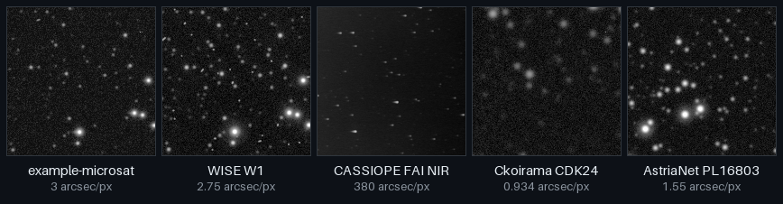
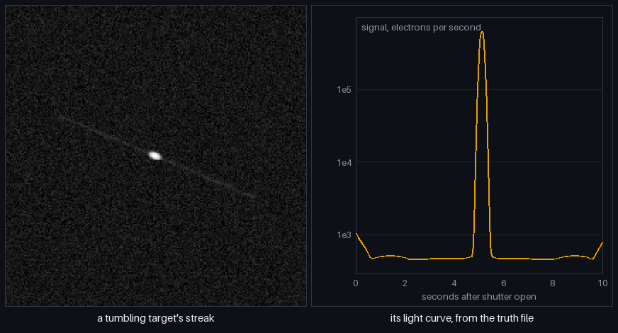
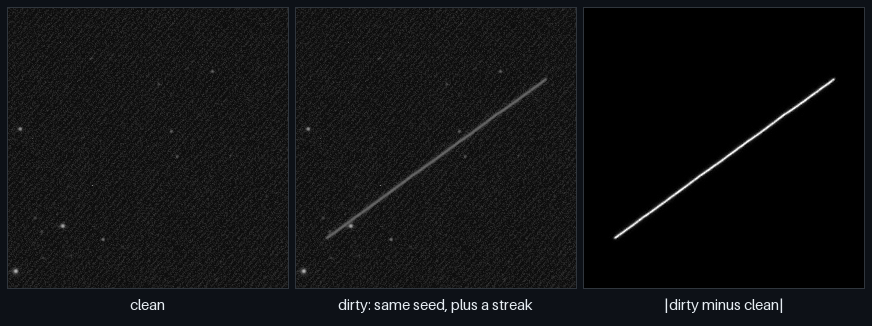
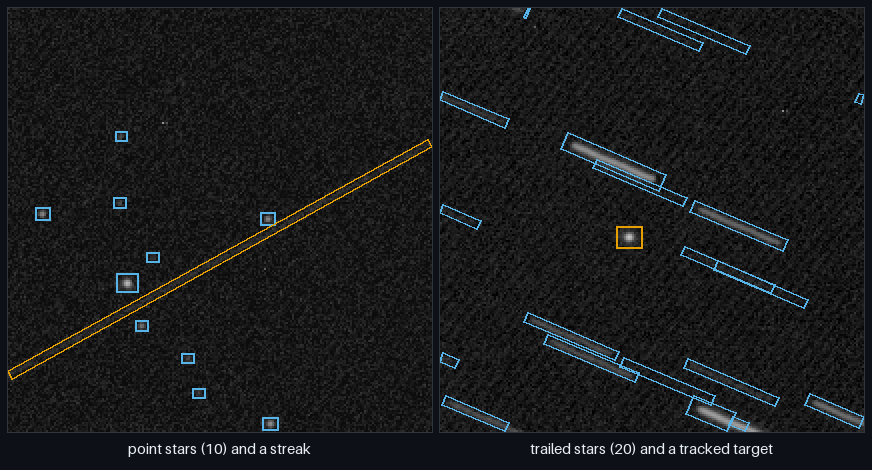
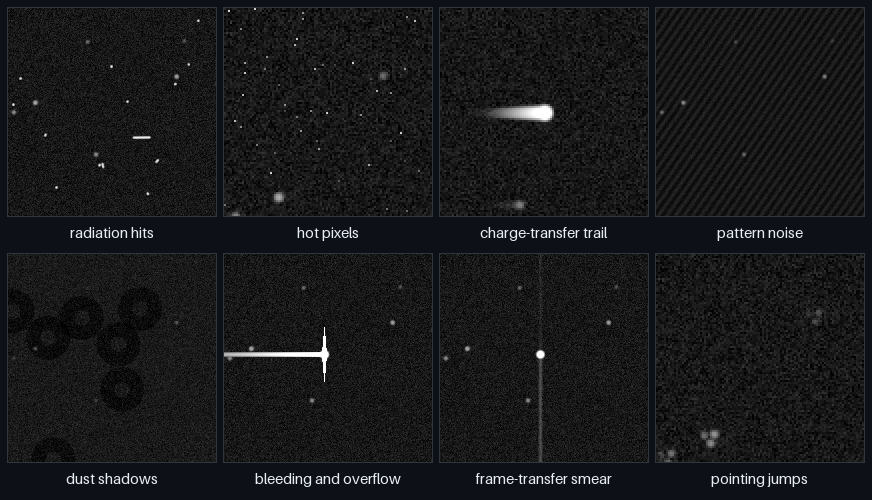

Skytwin¶
Synthetic star-field images with satellite streaks, instrument defects and an exact answer key for every frame.


Skytwin is a simulator, written in Rust with Python bindings, of what a camera sees when it looks for satellites and other resident space objects, from orbit or from the ground. A frame from a real camera comes with no list of what is in it. A frame from Skytwin comes with a truth file that gives the position, path, flux and signal-to-noise ratio of every star, streak and target. That makes it a test bench for detectors, trackers and plate solvers (such as Fayde), and a source of labelled training data for space domain awareness.
Stars are placed by hand, at random, or read from UCAC4 or a Gaia extract and moved to the observation epoch; with a sky pointing, the FITS header carries a TAN or TAN-SIP WCS. Observers and targets come from TLEs, state vectors or ephemeris tables, with light-time, Earth shadow, glints from tumbling facets, and refraction and extinction for a ground site. An instrument profile holds every detector and optics defect as a setting, fixed or drawn per frame. The same scene file and seed give the same pixels on every machine.
The pictures in this file are synthetic frames made by
scripts/make_readme_figures.py. Each frame is shown with the
asinh stretch that skytwin-export writes, so its grey levels follow its own noise and can't be
compared across frames. The first picture shows random stars through each shipped
instrument profile, a 164-pixel crop from the centre of each frame at the
camera's own pixel scale:

Install¶
The command needs Rust 1.85 or later. To install it from a checkout:
cargo install --path crates/skytwin-cli
The Python package, which also provides the skytwin-export command, and skytwin-calibrate
need Python 3.10 or later. In a virtual environment, from the repository root:
pip install ./crates/skytwin-py
pip install -e tools/calibrate
A star catalogue, a UCAC4 directory or a Gaia CSV extract, is optional; scenes need one only for real skies.
Quick start¶
Render the example scene from the repository root:
cargo run --release -p skytwin-cli -- examples/two-streaks.json out/two-streaks.fits
This writes out/two-streaks.fits, its answer key out/two-streaks.truth.json, and
out/two-streaks.provenance.json. In the truth file, streaks[0] gives the first streak's
start and end pixels and its flux_e. --seed N overrides the scene's seed.
More scenes, from a camera in a 790 km orbit to a ground telescope tracking a MEO satellite, are
in examples/. Four of them, leo-observer, leo-stares-geo, leo-tracks-geo, and
ucac4-field, read their stars from a UCAC4 catalogue at data/ucac4. To render them, copy
UCAC4 to data/ucac4, or set scene.catalog.ucac4 in the scene file to the path of your copy.
examples/tumbling-glint.json renders a tumbling target whose panels reflect the Sun towards the
camera once in the exposure. The truth file records the signal along its streak:

Each pixel draws its noise from its own random stream, so the same seed with and without a satellite gives an exact clean and dirty pair. In the next picture, made with the example profile without its frame-transfer smear, the two whole 1024 × 1024 frames differ in 4,565 pixels, all where the streak's light falls; the difference panel is on a linear scale:

Training sets¶
The --frames option renders independent frames on all cores, and frame k uses the scene's seed
plus k. To render 20 frames of examples/dirty-frame.json from the repository root:
skytwin examples/dirty-frame.json out/batch/f.fits --frames 20 --compact-truth
Each frame of this scene is a 2 MB FITS file, so a set of 50,000 frames takes about 105 GB.
From Python, frames arrive as numpy arrays with their truth, with exactly the pixels of the same
frame from --frames:
import skytwin
sim = skytwin.Simulator("examples/dirty-frame.json")
for frame in sim.stream(count=20):
image, stars = frame.image, frame.truth["stars"]
To write a set that Ultralytics YOLO and COCO tools such as DETR read directly:
skytwin-export examples/dirty-frame.json out/yolo/ --frames 20 --format yolo --format coco --tile 640
Stars are class star, and targets and streaks are class satellite. An object is labelled
when its matched-filter signal-to-noise ratio in the tile reaches 5, the default. The next picture
draws the rotated boxes that --format yolo-obb writes, blue for stars and orange for satellites.
--format yolo writes axis-aligned boxes around the same objects, and COCO records both:

Instrument profiles¶
A profile is one JSON file holding everything tuned to a sensor: noise, pattern noise, dark current, hot and flickering pixels, radiation hits, charge-transfer trails, smear, saturation, flat field, stray light, pointing motion and the FITS header style. The next picture turns on one defect at a time in a plain camera, with settings strong enough to see:

To learn a profile from sample frames, with the installed skytwin refining it, and print what it
holds:
skytwin-calibrate learn FRAMES_DIR -o profile.json --skytwin skytwin --catalog GAIA_CSV
skytwin-calibrate describe profile.json
FRAMES_DIR is a folder of FITS frames and GAIA_CSV a Gaia extract.
profiles/cassiope-fai-nir.json was learned this way from the
public DUST dataset, frames of the CASSIOPE Fast Auroral Imager's near-infrared channel.
Documentation¶
The documentation site holds every page below.
| Document | Covers |
|---|---|
| docs/tutorials/first-training-set.ipynb | Tutorial: describe a camera, render a frame, read its labels and export a YOLO training set |
| docs/scene-format.md | Scene files, the truth file and FITS header keywords |
| docs/override-a-profile.md | Using an instrument profile in a scene and changing its settings |
| docs/reference/profile.md | Every key of an instrument profile |
| docs/design/realism.md | How profiles model real defects, and the limits of the models |
| docs/export-training-data.md | Exporting a YOLO or COCO training set, and loading frames in PyTorch |
| docs/labels.md | Every label field, class and box rule, export option and output file |
| docs/design/labels.md | How the signal-to-noise ratio and the label rules are computed |
| docs/learn-a-profile.md | Learning a profile from real frames; scoring a detector |
| docs/reference/calibrate.md | Every skytwin-calibrate command and the files learn writes |
| Command-line reference | Every option of skytwin, skytwin-export and skytwin-calibrate, from their --help |
| docs/reference/python-api.md | The skytwin Python package: simulator, labels, PyTorch dataset, export |
| docs/design/calibration.md | How skytwin-calibrate measures each block |
| docs/validation.md | Checks against independent tools, reproducibility and speed |
| docs/references.md | The papers and standards the models follow |
| docs/versioning.md | What counts as a breaking change |
| CHANGELOG.md | What changed in each release |
The library's API documentation: cargo doc --open -p skytwin-core.
Help¶
Ask questions in Discussions and report bugs in Issues. Report a vulnerability privately, as SECURITY.md describes. To contribute, see CONTRIBUTING.md.
Citation¶
If you use Skytwin in published work, cite it as CITATION.cff gives.
Licence¶
Skytwin uses the GNU General Public License, version 3 or later; see LICENSE. Third-party data and code notices are in THIRD-PARTY-LICENSES.md.